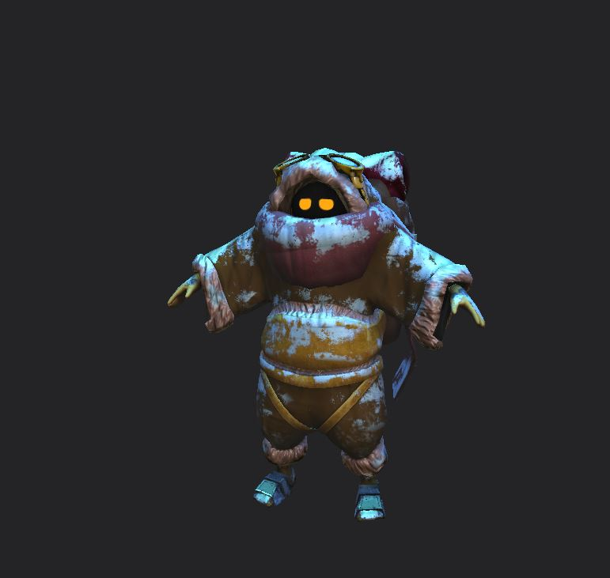
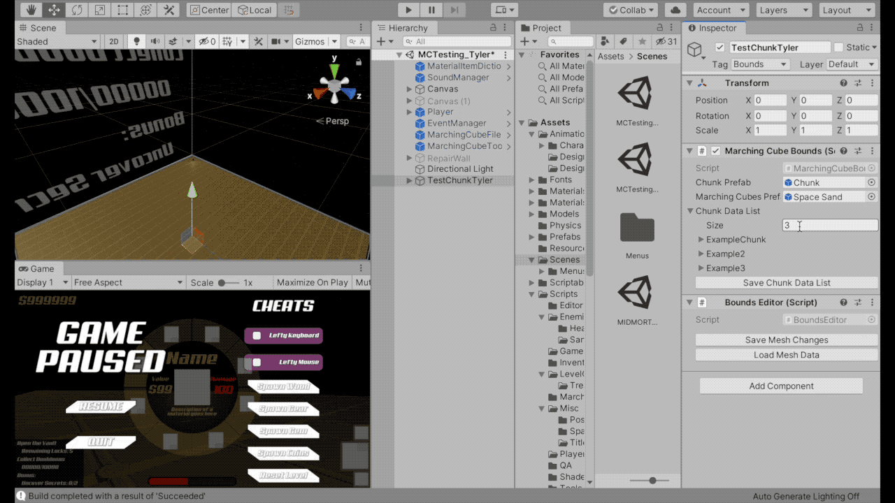
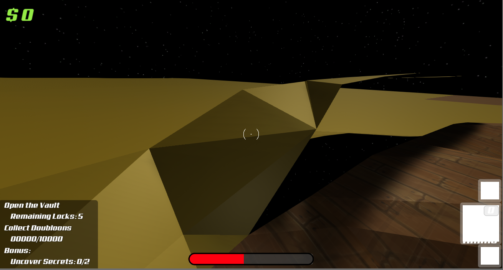

Senior Capstone Post 2 | Marching Cube Tools & New Game Name
Tyler Chapman, Feb, 3, 2020
Welcome back! Quite a bit has changed in our game since my last blog post, including the game’s name. We knew once we got through our school’s cuts that the first change that was desperately needed was the game's name. Vacuum Vault was alright, but it sounds like a school project, not an actual publishable game. After a lot of deliberation and frozen III jokes, we came to a name that our team agreed upon.
Our game from this point on will be known as Eira: Echoes of Egil. As our game changed from a sandy environment to a snowy one, we decide that the game could have Nordic inspiration. The protagonist’s name of the game, Eira, directly translates to snow in Welsh. Our protagonist follows in the footsteps of her recently gone missing treasure hunter grandfather Egil, who’s name was based on a [folktale]. As Eira is following Egil’s footsteps, we decided that in a way, Eira is echoing Egil, hence the full name Eira: Echoes of Egil. With a final name out of the way, our team shifted directions and began doing work.
From my last post, I mentioned how all of my new team members first needed to become acquainted with the code base, our game direction, and overall team composition. After about the second week on the team, everyone seemed to have transitioned nicely into a defined role in the team. Designers are creating a more in-depth narration for the player to follow, laying out block-outs for two levels, devising an upgrade system for the vacuum gun, and brainstorming ideas for future AI that we will be implementing. Artists have been concepting various objects in the game, creating snowy materials, sculpting a new model for the character, building art tools for rebuildable objects and piecing together environment art.
First pass on Character Model
Producers have been keeping everyone on track for tasks, researching into getting our game onto the Xbox and writing up legal documents if we are intending to publish our game. Programmers have been working on object pooling to optimize game performance, improving on a new movement system for the player, adding new walrus AI for the player to utilize, getting our game to run on an Xbox, creating tools to help designers created rebuildable structures such as ladders and as always, improving marching cubes. As I worked primarily on marching cubes (MC), I can go in a bit more depth about my work on it.
From my last post, I mentioned that my work on MC mainly consisted of two overarching tasks, creating designer tools and optimizing the current algorithm. Since my last post, quite a lot of work has been done. For optimization, I stripped out a lot of old code that slowed down the performance but gave the designers a bit more freedom as to where they can place the mesh. The mesh can now only be at the origin, but the game runs significantly faster and the mesh can be much larger. I was able to multithread rendering, decreasing the frame drops whenever the player looked to or away from large polycounts in our scene.
I decided against moving a lot of the complex math calculations to the GPU by making a compute shader as the GPU was already working hard to render our scene. I instead did a lot of research into Unity’s DOTS (Data Oriented Technology Stack). DOTS is comprised of three systems, ECS (Entity component system), the Unity job system and the burst compiler. I will not be attempting to implement all three parts of DOTS, as I do not see a reason to use ECS unless my team wants MC to have realtime realistic physics.
I have done extensive research into the job system and burst compiler, seeing which portions of my code can use them. I have yet to implement either of them as the current version of the DOTS is experimental, and the last time we tried building using them, Unity crashed. I will keep an eye out in hopes that Unity posts an update fixing this issue, but until then I can only wait. While I have been waiting, I have worked a lot of the designer tool for MC.
Firstly, I split the MC data from the whole mesh down to individual chunks. What I mean when I say this is not that I chunked the mesh. My implementation had already chunk the vertex data into subsections called chunks. Previously, an entire mesh had the exact same characteristics such as if they could be edited by players, their drop rates, their textures, etc. Currently, a designer can specify all of this information by a chunk by chunk basis as opposed to the entire mesh. Once I had this done, I ran into another issue. I did not want this information stored on every individual chunk as this would take up a lot of memory. I now had to store all the information only once, but grab a reference to this data in the editor but load it at runtime. I did a bit of research and found that I could make an editor tool, the only issue is that I am not a tools programmer. After a little more research, I am now a tools programmer. I was able to create a tool that allowed the designers to create chunk data on the mesh parent, then on any of the chunks, a small enum dropdown would allow them to select the chunk data by name. Once the game loads in, all of the various data is set.
Creating a new Chunk Type (Using MC Tool)
My next issue is that MC was unable to have a texture placed on it. I assumed this was a graphics issue, but similar to tools programming, I am not a graphics programmer. I did a bit of research into the issue and found that the conventional way a texture is applied to an object using it’s UV coordinates. The issue is that since MC is a generated mesh, it has no UV coordinates so I needed to apply a texture to an object without UV coordinates. I then found a shader called a triplanar shader that applies a texture to an object without using UVs. I then implemented a triplanar shader that appears to work as textures can now be applied to MC.
Multi-textured MC mesh

Another request that the designers made was to put a max height that the player can build up to on each chunk. Adding a max height was rather easy, but I ran into an issue that the underlying algorithm, MC is known for. Each cube and chunk do not care about one another, so giving a max height to a neighboring chunk that is significantly lower than another will cause a break in the mesh to occur. I am unsure of a way to correct this issue as of now, as I just implemented the max height to the chunks recently. In another one of my classes, I am working on implementing another terrain generation algorithm that fixes this issue, but I do not think I will be done with it for at least another two months. I will continue to look for a solution to the mesh holes, but for now, I will either need to remove this mechanic so the designers can not do this, or put more time into it.
Example of Breaking Mesh
I am happy with the current progress of the game from where we started this semester. Seeing how quickly work can get done with a team of this size compared to a team of 5 is incredible. By my next blog post, I hope that I have solved all the issues I currently have and implement everything else that is expected of me. However, as like everything, game development is incredibly unpredictable and whatever I hope to what is actually finished might be completely different.